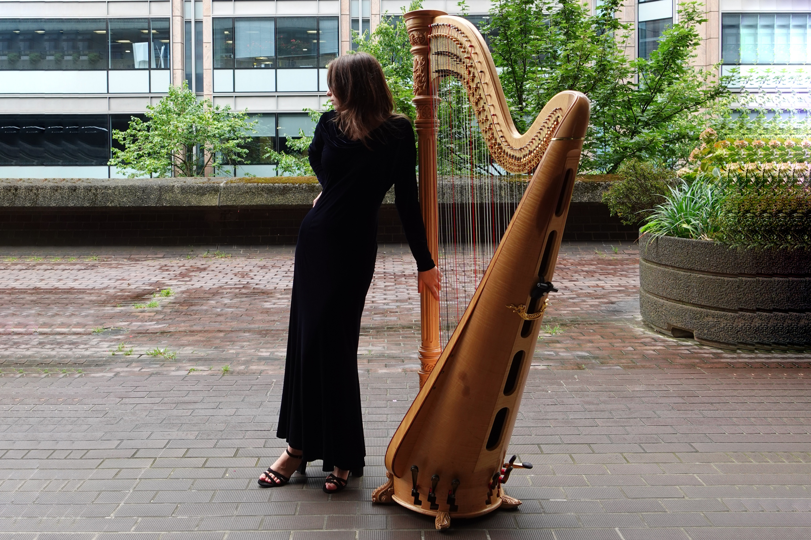
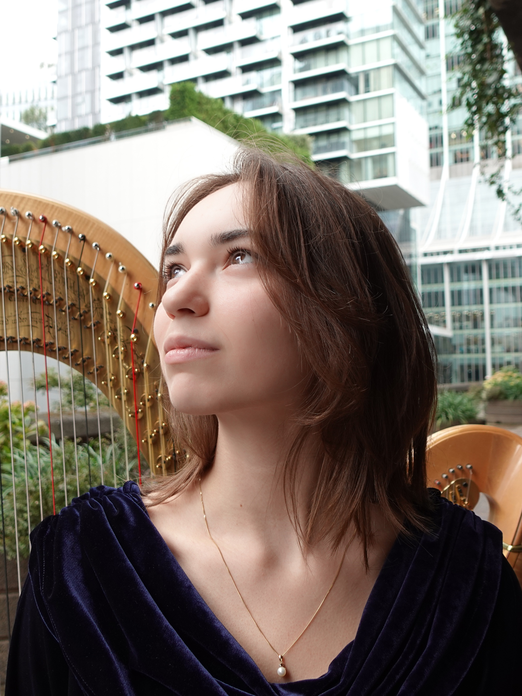
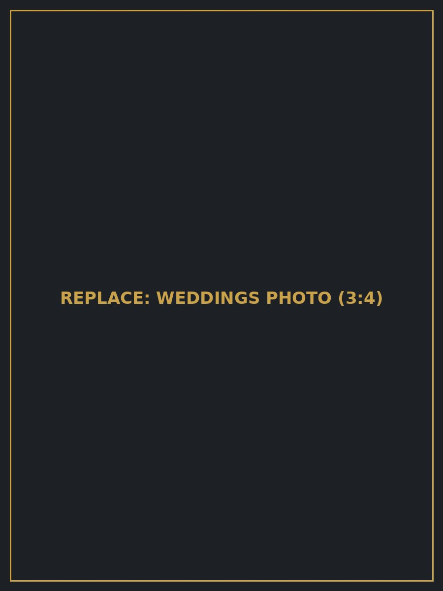
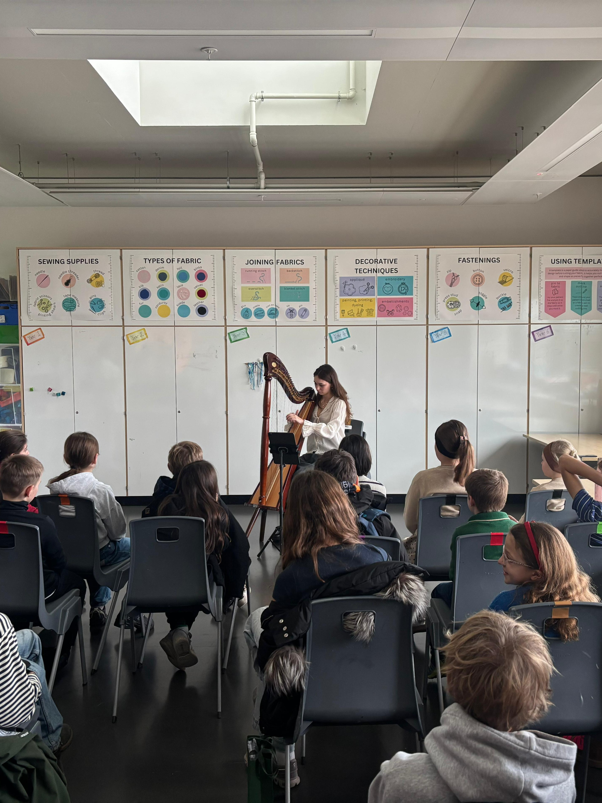

About
Sabrina Savenkova
Harpist Sabrina Savenkova, a graduate of the Guildhall School of Music & Drama under Keziah Thomas, performs widely as an orchestral, chamber, and solo musician in venues across the country. Her versatility extends to exploring contemporary and cross-genre projects, premiering new works for harp, and musical performances with theatre and poetry. Sabrina brings a unique and artistic perspective to her work, performing with warmth, poise, and expressive sensitivity.
Read more about me →Listen
A Moment of Music
“Wave” by Antônio Carlos Jobim, arranged for pedal harp by Sabrina Savenkova.
Listen to more →Weddings & Events
Weddings & Events
Music has the ability to transform a moment — creating atmosphere, emotion, and lasting memories.
From weddings to corporate events and private celebrations, I tailor music to each occasion. My repertoire includes Classical, Film Music, Jazz, and Contemporary pieces.
Please get in touch for availability and bookings.


Teaching
Private Tuition
I offer private harp tuition for students of all levels, focusing on technique, musicality, and confidence.
Contact
¡Get in touch!
Let's chat!
For full bookings and enquiries, please leave me a message with as much detail as you can provide and I will get back to you as soon as possible!
Alternatively, please get in touch with me on 0 7305 660 180, or sabrinasavenkova.harp@gmail.com.
Connect with me –
Frequently Asked Questions
Yes – however please prepare a shaded and/or sheltered area to protect the harp from direct sunlight and unexpected rain. The harp is a delicate instrument, and these conditions help ensure it remains in excellent condition throughout your event.
Please note that the harp requires step-free (disabled) access wherever possible. As the instrument is large and delicate, it can only be safely moved up or down a small number of steps at a time.
I’m based in South West Central London, UK, and I'm available for performances across London, the UK, and internationally. I teach from my studio and travel to students in some parts of London by arrangement. Online lessons are also available for students further afield.
I’d be delighted to arrange a song for your event. Please let me know your request with advance notice for this to be prepared ahead of time.
I require a performance space that is approximately 2 by 2 metres with flat, level, and dry ground.
Please note that the harp requires step-free (disabled) access wherever possible. As the instrument is large and delicate, it can only be safely moved up or down a small number of steps at a time.
Don't see your question here? Get in touch and I'll be happy to help.
Never miss an update! Follow me on social media below.